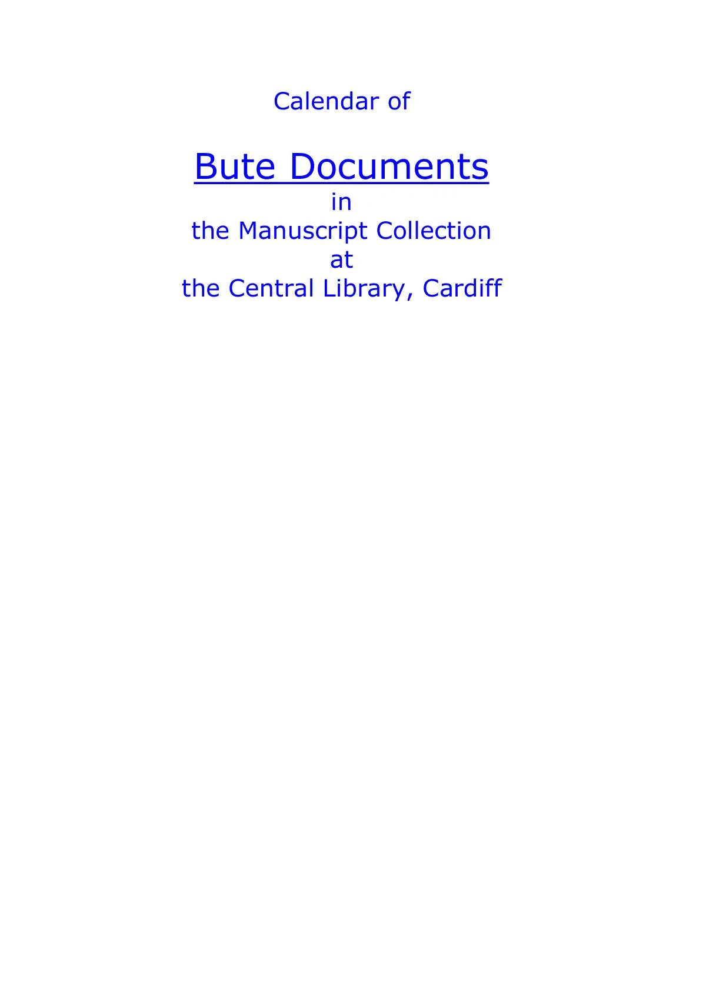

GHF-CCL-20261023-A1 not found
Calendar of Bute Documents I–XLI, Manuscript Collection, Central Library, Cardiff: finding aid supplied with the reply on Bute X.6(12)

Transcript
Calendar of Bute Documents in the Manuscript Collection at the Central Library, Cardiff Bute I Glamorganshire Canal 1791-1834 [MS 4.1029] Bute II Ship protests 1766-1882 [MS 4.1030] Bute III Pilotage – Cardiff and Bristol Channel (ship protests, bills of lading, charter parties, legal papers, correspondence etc) 1810-1875 [MS 4.1031] Bute IV Bute Estate: railways (other than the Taff Vale Railway) and Bute Docks, 1834-1836, 1878-1916 [MS 4.1032] Bute V Bute Estate: Taff Vale Railway Co. and Bute docks - arrangements and agreements 1836-1911 [MS 4.1033] Bute VI Dowlais Coal & Iron Works, 1824-1885 [MS 4.1034] Bute VII Bute Estate: Mineral properties, reports, letters, memoranda, 1764, 1823-1849, 1893 [MS 4.1035] Bute VIII Bute Estate: Mineral properties, legal documents; leases, 1877-1887; sale catalogue, 1895; notes of Chancery case re Powell Duffryn Steam Co, 1901 [MS 4.1036] Bute IX Bute Estate: papers re estate management and politics (IX/27/12-13 re Chartism in 1839) and also re Luton estate 1764-1918 [MS 4.1037] Bute X
Read more
Bute: property accounts – abstracts (X/1-12), 1778-1890; estate bills and vouchers (X/13), 1829- 1834; bills and accounts (X/14), 1794-1847; miscellaneous accounts (X/15) 1769-1887 [MS 4.1038] Bute XI Bute Estate: Bute docks – general, 1828-1893 [MS 4.1039] Bute XII Bute Estate: Bute docks – rating, tonnage, wharfage, 1834-1845, 1877 [MS 4.1040] Bute XIII Bute Estate: Bute docks – plans, c.1845-1917 [MS 4.1041] Bute XIV Bute Estate: Ironworks (Bute etc), 1821-1890 [MS 4.1042] Bute XV Blaenclydach colliery, 1864-1877 [MS 4.1043] Bute XVI Collieries (other than Blaenclydach), 1735, 1799, 1829-1882 [MS 4.1044] Bute XVII Turnpike trusts, 1821-1838, 1868-1883 [MS 4.1045] Bute XVIII Duke of Beaufort's property in Glamorgan, 1823-1836 [MS 4.1046] Bute XIX Windsor family estate: papers (XIX/1-66), 1558-1818; notebooks (XIX/67-76), c.1680-1772 [MS 4.1047] Bute XX Correspondence and other papers concerning Chartist agitation 1839-1843 [MS 4.1048] Bute XXI Glamorgan magistrates 1836-1847 [MS 4.1049] Bute XXII Glamorgan police, 1839-1846 [MS 4.1050] Bute XXIII Cardiff apprentices, 1631-1785, 1861 [MS 4.1051] Bute XXIV Cardiff – returns of officers, 1735-1782, 1820 [MS 4.1052] Bute XXV Cardiff Corporation – papers 1699-1820 [MS 4.1053] Bute XXVI Places of settlement, 1738-1764, 1766-1786 [MS 4.1054] Bute XXVII Processes – debt, c.1757-1778 [MS 4.1055] Bute XXVIII Cardiff Court – papers, c.1748-1826 [MS 4.1056] Bute XXIX Cardiff Court – papers, 1754-1784 [MS 4.1057] Bute XXX Cardiff Court – papers, 1767-1784 [MS 4.1058] Bute XXXI Cardiff – Poor law administration, 1737-1783 [MS 4.1059] Bute XXXII Cardiff – processes, felonies, misdemeanours, 1762-c.1800 [MS 4.1060] Bute XXXIII Glamorgan Militia – papers, 1802-1845 [MS 4.1061] Bute XXXIV Glamorgan Militia – lists, 1819-1821 [MS 4.1062] Bute XXXV Glamorgan Militia – amended rolls, 1822-1823 [MS 4.1063] Bute XXXVI Windsor and Bute estates – vouchers (receipts), 1730-1731, 1757-1771, 1782-1784, 1795-1798 [MS 4.1064] Bute XXXVII Plymouth and Windsor estate, co. Monmouthshire, 1707-1723, 1739-1767 [MS 4.1065] Bute XXXVIII Bute Estate: Manor of Miskin – Court Leet, resiant's lists, 1760, 1800-1807, 1810-1815 [MS 4.1066] Bute XXXIX Bute Estate: Manor of Glyn Rhondda, 1780-1797 [MS 4.1067] Bute XL Bute Estate: Manor of Senghenydd, 1752-1815 [MS 4.1022] Bute XLI Bute Estate: Manor of Ruthyn, 1787, 1789 [MS 4.1069]
Artifact description
Confirms Bute X.6(12) is still held; staff looked and could not find information about the property; manuscript index showed no matches; scan only via Glamorgan Archives at a cost; detailed research would carry a charge; offers an in-person visit. Two Bute catalogues attached.
| Catalogue ID | GHF-CCL-20261023-A1 |
|---|---|
| What it is | PDF document from Cardiff Central Library. Attached to an email received on 23 October 2026, their reference Bute X.6(12). 4 pages. |
| From | Cardiff Central Library |
| Email received | 23 October 2026 |
| Their reference | Bute X.6(12) |
| Pages | 4 |
| File | 1. Calendar of Bute Documents I-XLI.pdf (154 KB) |
| State | Read |
Our integration
Cardiff Central Library's calendar of the Bute documents in its manuscript collection (Bute I–XLI). Library staff confirmed that Bute X.6(12) is still held, found nothing about the property in the manuscript index, and offered an in-person visit. Scans are only available through Glamorgan Archives, for a fee.
Why it matters: it is the map of what survives of the Bute estate papers in Cardiff. It shows which series could hold a Llandough farm sale or lease before 1938.
What cuts against the case: the library looked and found no match. Most of the calendar covers docks, railways and minerals rather than farm tenancies.
Working-theory relevance · 29 October 2026: This is a finding aid for the Bute manuscript series, not the underlying transaction. Its value to the theory is to identify which series might contain the 1877 arrangement, title transfers or estate accounts, and to document the library search outcome. The reported lack of an index match cuts against a simple claim that the record is readily catalogued; it does not prove that a deed existed, was destroyed or was deliberately hidden. Theory and test schedule.
Related: GHF-CCL-20261023-A2 — Bute X: property accounts, Manuscript Collection, Central Library, Cardiff: finding aid supplied with the reply on Bute X.6(12) · The covering email · What They Don’t Say: WTDS-0f796e05-1 · EV-0341 in the evidence catalogue · Timeline · Disclosure Dartboard